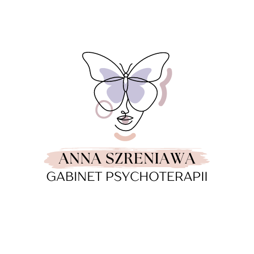

|  |
Anna SzreniawaGabinet Psychoterapii |
Jestem psychoterapeutką i socjoterapeutką młodzieży i dorosłych nurtu psychodynamicznego, interwentką kryzysową, edukatorką seksualną, trenerką i realizatorką kreatywnych warsztatów dla dzieci i młodzieży. Ukończyłam całościowe szkolenie psychoterapeutyczne w Krakowskim Centrum Psychodynamicznym. Pracuję z młodzieżą i osobami dorosłymi zmagającymi się z zaburzeniami depresyjnymi, bulimią i anoreksją, zaburzeniami lękowymi oraz zaburzeniami osobowości. Swoją pracę poddaję ciągłej superwizji.
Do kontaktu zapraszam osoby, które nie są zadowolone ze swojego codziennego funkcjonowania, odczuwają w swoim życiu pustkę, ciągły niepokój lub czują się zagubione, przeżywają problemy adaptacyjne związane z przebytym kryzysem lub stratą (związaną ze śmiercią bliskiej osoby, rozwodem, zdradą).
Pracuję również w telefonie zaufania obejmującym pomoc osobom w kryzysie przemocy w rodzinie, osobom w kryzysie po przebytym porodzie, w tym depresja poporodowa, poronieniu, aborcji, gwałcie.
Jestem też magistrą ekonomii, nauczycielką, specjalistką finansową, koordynatorką i menadżerką projektów, od wielu lat związaną z sektorem NGO.
Skontaktuj się ze mną telefonicznie, aby umówić wizytę w dogodnym dla siebie terminie.
Telefon: +48 666 698 915
E-mail: psychoterapia.port.emotikon@gmail.com
Adres: Centrum Pod Zegarem, Plac Kazimierza Wielkiego 11, II piętro, pokój 2.6, 32-005 Niepołomice
FB: https://www.facebook.com/psychoterapia.emotikon.niepolomice
Inne: https://www.terapiadlaciebie.pl/zespol/anna-szreniawa/